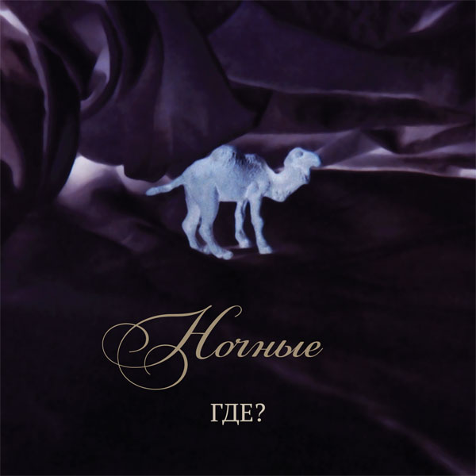

Юрий Шевченко · ГДЕ? · Ночные
Тихо роняя прозрачные тени

Руслан Гончаров — тексты.
Юрий Шевченко: музыка, аранжировки, вокал, запись, сведение, фото, дизайн и вёрстка обложки.
Фонограммы подготовлены в селе Опытное Артёмовского района Донецкой области в марте 2011 года.
Вокал записан и сведён с фонограммами в селе Новолуганское того же района осенью того же года.
Там же альбом был пересведён в ноябре 2013 года.
Дата релиза — 15 ноября 2011 г.